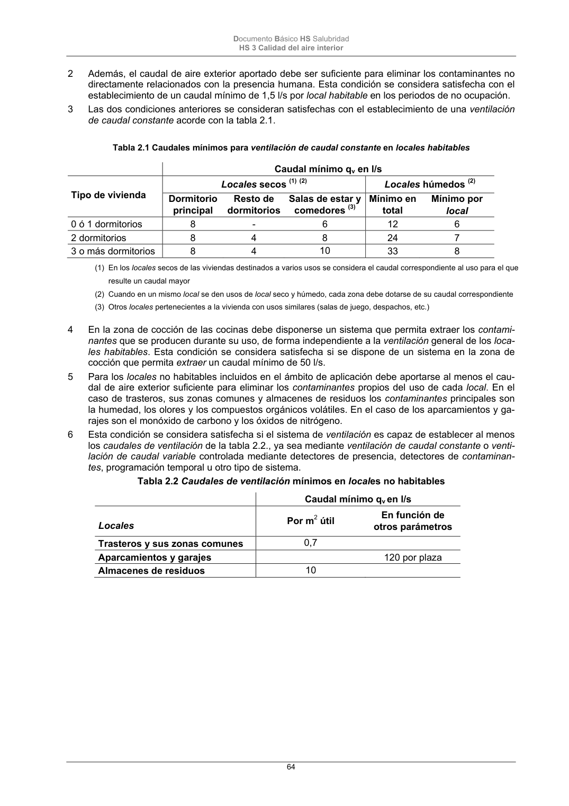

DB-HS · Página 64 · versión 2022-06-14
SHA256: 68df3caacc95f71aee2ec1ba7b2c65ae66155c21e3a8785521b8fdd4fd640d3b · página física 64 de 184 · métodos de encabezado
solo si están cotejados.
Formatos: Markdown · JSON de bloques · PDF p. 64 · imagen PNG
Documento Básico HS Salubridad HS 3 Calidad del aire interior 64 2 Además, el caudal de aire exterior aportado debe ser suficiente para eliminar los contaminantes no directamente relacionados con la presencia humana. Esta condición se considera satisfecha con el establecimiento de un caudal mínimo de 1,5 l/s por local habitable en los periodos de no ocupación. 3 Las dos condiciones anteriores se consideran satisfechas con el establecimiento de una ventilación de caudal constante acorde con la tabla 2.1. Tabla 2.1 Caudales mínimos para ventilación de caudal constante en locales habitables Caudal mínimo qv en l/s Tipo de vivienda Locales secos (1) (2) Locales húmedos (2) Dormitorio principal Resto de dormitorios Salas de estar y comedores (3) Mínimo en total Mínimo por local 0 ó 1 dormitorios 8 - 6 12 6 2 dormitorios 8 4 8 24 7 3 o más dormitorios 8 4 10 33 8 (1) En los locales secos de las viviendas destinados a varios usos se considera el caudal correspondiente al uso para el que resulte un caudal mayor (2) Cuando en un mismo local se den usos de local seco y húmedo, cada zona debe dotarse de su caudal correspondiente (3) Otros locales pertenecientes a la vivienda con usos similares (salas de juego, despachos, etc.) 4 En la zona de cocción de las cocinas debe disponerse un sistema que permita extraer los contami- nantes que se producen durante su uso, de forma independiente a la ventilación general de los loca- les habitables. Esta condición se considera satisfecha si se dispone de un sistema en la zona de cocción que permita extraer un caudal mínimo de 50 l/s. 5 Para los locales no habitables incluidos en el ámbito de aplicación debe aportarse al menos el cau- dal de aire exterior suficiente para eliminar los contaminantes propios del uso de cada local. En el caso de trasteros, sus zonas comunes y almacenes de residuos los contaminantes principales son la humedad, los olores y los compuestos orgánicos volátiles. En el caso de los aparcamientos y ga- rajes son el monóxido de carbono y los óxidos de nitrógeno. 6 Esta condición se considera satisfecha si el sistema de ventilación es capaz de establecer al menos los caudales de ventilación de la tabla 2.2., ya sea mediante ventilación de caudal constante o venti- lación de caudal variable controlada mediante detectores de presencia, detectores de contaminan- tes, programación temporal u otro tipo de sistema. Tabla 2.2 Caudales de ventilación mínimos en locales no habitables Caudal mínimo qv en l/s Locales Por m2 útil En función de otros parámetros Trasteros y sus zonas comunes 0,7 Aparcamientos y garajes 120 por plaza Almacenes de residuos 10
